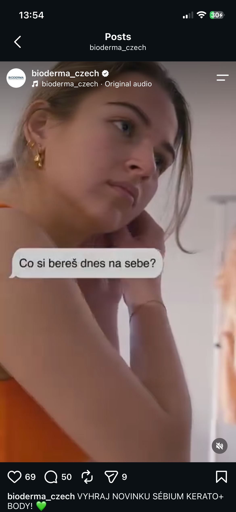

Vánoce 2025


Vánoční kampaň 2025
Propojení 3 zážitkových aktivit na pasáži centra s online soutěží. Návrh mechaniky soutěží a koordinace podkladů pro sociální sítě.
1 000Rozdaných losůVíkendová aktivace
227 358Zobrazení soutěžePojmenuj medvěda
Propojení 3 zážitkových aktivit na pasáži centra s online soutěží. Návrh mechaniky soutěží a koordinace podkladů pro sociální sítě.


Rodinná pátrací hra na pasáži centra propojená s online kampaní. Příprava herního konceptu, vlastní natáčení a střih reportážních videí.


Vlastní námět, natáčení na pasáži a střih reportážního videa.


Vlastní natáčení slavnostního otevření a gastro nabídky; střih Reels.


Zapojení do návrhů a posuzování influencerů podle brand fitu.


Vlastní koncepty interaktivních Instagram Stories.


Ukázky Sébium Kerato+ a soutěžního příspěvku Hydrabio. Kreativní zadání, texty a koordinace výstupů.


Video formát „Co si bereš dnes na sebe?“ a vánoční produktová komunikace. Plánování obsahu a spolupráce s grafickým týmem.


Vlastní natáčení a střih videí – příprava kávy, signature drinky a atmosféra bistra.


Vícedílné carousely představující signature menu (Avocado bread, drinky) a prodejní copy.
Funkční reportingový nástroj vyvinutý s podporou AI agenta. Pomáhá extrahovat metriky ze screenshotů, strukturovat výsledky kampaní a připravovat reporty.
Strukturovaný kampaňový report: vyhodnocení influencer spolupráce pro značku Smetanito (Fousatej fotr · Na pánev a gril).